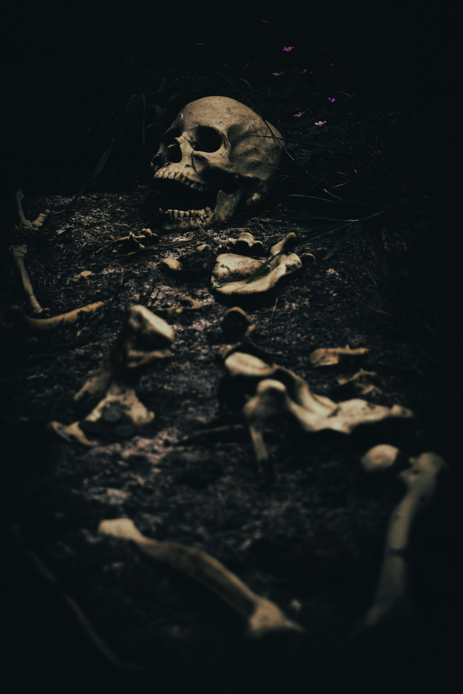
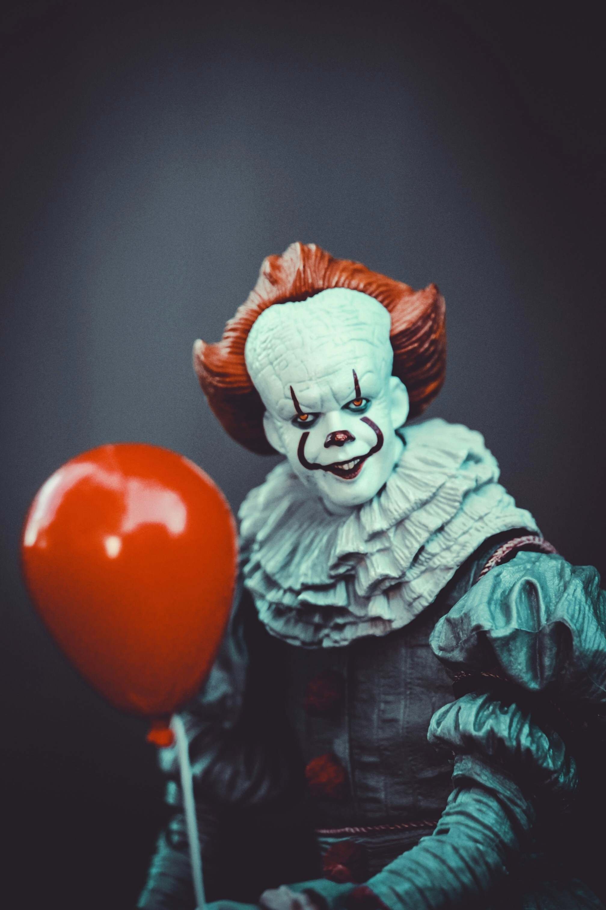
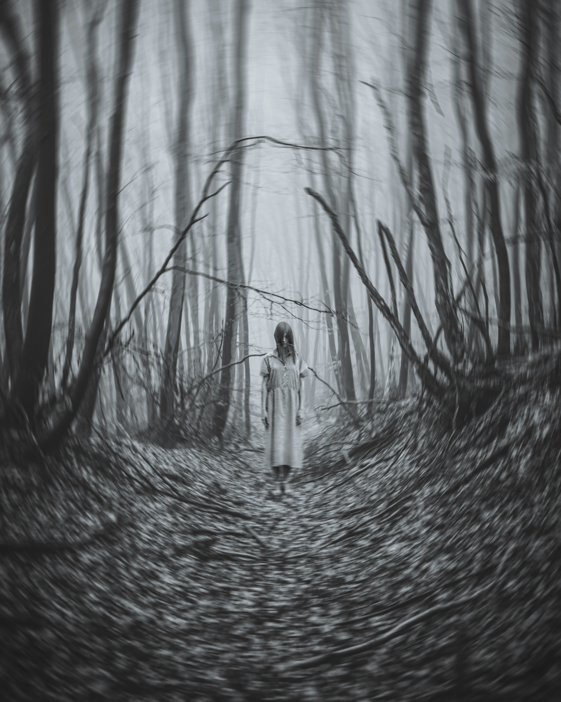
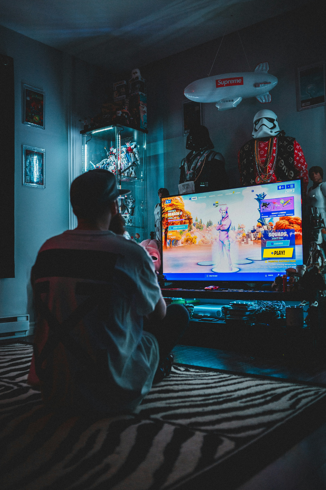

Filmes e Séries
Esta seção reúne recomendações de filmes e séries de terror, com histórias de suspense, mistério e sustos.



Música e Podcasts
Aqui estão dicas de rock, bandas, álbuns e podcasts para quem gosta de música e conversas sobre cultura.
Games e Tecnologia
Esta coluna traz jogos de ação, consoles, computadores e novidades do mundo da tecnologia.
